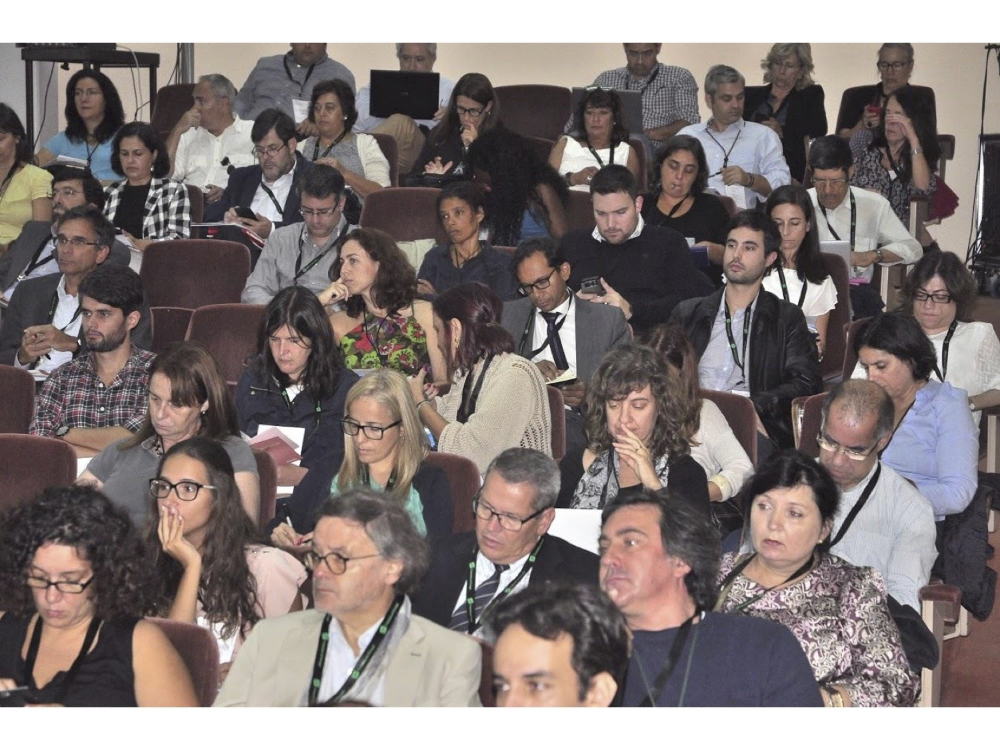

Nos anos de 2017 e 2018 o ISOC PT organizou ou coorganizou vários eventos públicos, nomeadamente:
- Coorganização de um debate sobre Fake News no dia 24 de Maio de 2017 em Lisboa
- Organização do Lisbon Node do evento "25º Aniversário da Internet Society" no dia 19 de Setembro de 2017
- Internet Governance Forum Portugal 2017 no dia 29 de Setembro de 2017 em Lisboa
- Atribuição do prémio ISOC / Inforum em Novembro de 2017 em Aveiro
- Participação num debate no âmbito do evento "E-Tech" em Setúbal no dia 11 de Maio de 2018
- Coorganização do simpósio "Bem vindo RGPD" em Lisboa no dia 25 de Maio de 2018
- Participação da ISOC no evento "C-Days 2018" em Coimbra no dia 21 de Junho de 2018
- Atribuição do prémio ISOC / Inforum em Setembro de 2018
- Internet Governance Forum Portugal 2018 no dia 29 de Outubro de 2018 em Aveiro
- Organização de workshops de balanço da atividade do ISOC PT no dia 30 de Novembro de 2018 em Lisboa
e também em Dezembro no Porto
Nestes anos o ISOC PT tomou igualmente diversas posições públicas sobre temas importantes do funcionamento da Internet, em particular as seguintes:
Eventos de 2017 - 2018


{kind=link}
{kind=link}
{kind=link}
{kind=link}
{kind=link}
{kind=link}